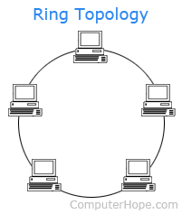

Networking Fundementals
Network Hardware
- Router - A device that sends and receives data across computer networks. These are often mixed up with Hubs, Modems and Switches.
- Hub - A Hub is a device that connects to devices across Ethernet. A major downside to these are that they are vulnerable to attacks.
- Modem - A Modem connects to a Router (which is what a local network is connected to) and allows those devices to access the internet.
- Switch - A switch is a device that connects other devices together over a Local Area Network (LAN).
- Wireless Access Point - This device, also known as a WAP, enables other devices to wirelessly connect and access a wired network.
- Network Interface Card - An NIC is a component within hardware that allows it to connect to a network.
Network Topologies
- Bus - All devices are connected to a single cable called the bus or the backbone all and data travels along it.
- Ring - Each device is connected to two devices to create a loop, sending and receiving data that travels around the loop in one direction.
- Star - Each device is connected toa central hub or switch, allowing for easier adding or removal of devices from the network.
- Mesh - Every single device is connected to each other, creating multiple paths for data transmission which is more resilient.
- Hybrid - A combination of multiple topologies. This can be done for reasons such as security, efficiency or simply cost.
